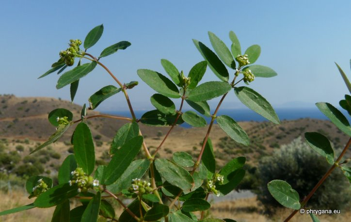
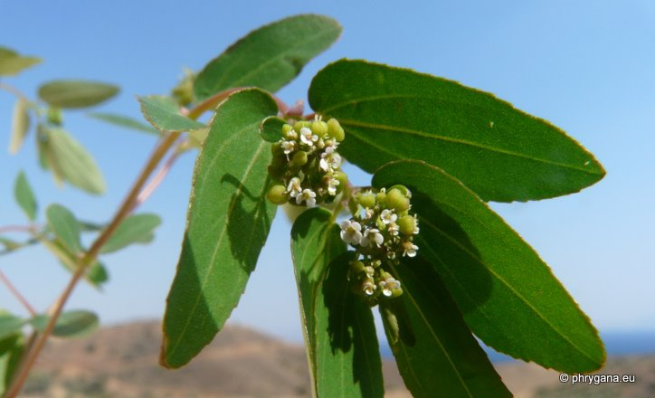
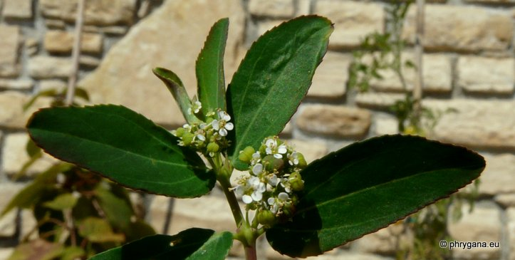
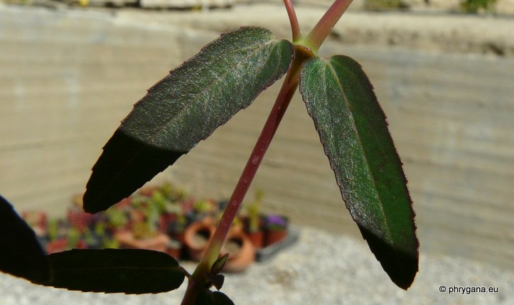

| PHRYGANA | Fauna | Flora | Galles | liste des espèces |
contact -
info - commentaires phrygana1 (at) gmail.com |
| Particularités crétoises | nouveautés | Mines | ressources naturelles |
| Euphorbia hypericifolia L. |
| 254 | Flora | EUPHORBIACEAE | Euphorbia L. |
|
 Euphorbia hypericifolia Melambes (Agios Giorgos) 02 septembre 2011 |
| syn: Chamaesyce glomerifera MILLSP. | |
| Plante à racine fibreuse, ramifiée au sommet | |
| Feuilles: : opposées, oblongues-ovales, longues de 15 -25 mm, larges de 4 - 8 mm; couleur vert foncé sur la face supérieure, vert clair sur la face inférieure; poils épars sur les deux faces; limbe à base arrondie et à apex obtus; marges dentées; trois veines bien marquées; stipules triangulaires libres ou connées; feuilles de l'involucre 2, semblabes aux feuilles | |
| Tige: tige épaisse, dressée, dense, lignifiante à la base, rouge brun | |
| Fleurs: nombreux cyathia en cymes axillaires ou terminales; pédoncule 3 - 5 mm; involucre à 5 lobes blancs; 4 glandes vert jaunâtre ovales; nombreuses fleurs mâles dépassant légèrement l'involucre, avec anthères lie-de-vin brunâtre; fleurs femelles à styles libres, stigmate bilobé; ovaire triangulaire glabre | |
| Fruit: capsule trigone 1-1.5 mm x 2 mm, glabre et lisse ; graines ovoïdes-anguleuses de 1.2 x 0.8 mm, à côtés striés, non caronculées | |
| Hauteur: 10 - 50 cm | Type biologique: thérophyte ramifié |
| Floraison: juin juillet août septembre octobre novembre | |
| Altitudes: 0 - 400 m | |
| Statut en Crète: en voie de naturalisation, introduite via les pépinières | |
| Biotopes en Crète: terrains vagues, jardins, trottoirs | |
| Distribution: Amériques nord et sud, naturalisée en région Méditerranéenne, Inde, Pakistan, îles du Cap-Vert | |
|
 Euphorbia hypericifolia Melambes (Agios Giorgos) 02 septembre 2011 |
|
 Euphorbia hypericifolia Melambes (Agios Giorgos) 25 juin 2012 |
|
 Euphorbia hypericifolia Melambes (Agios Giorgos) 25 juin 2012 |
| 31 août 2012 |
| © paul fontaine -- © Phrygana.eu 2007 -- 2013 |